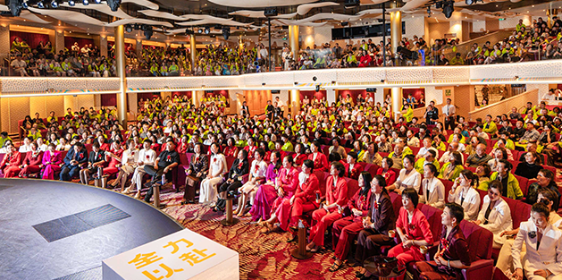
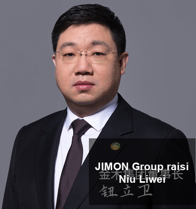
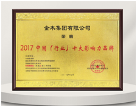
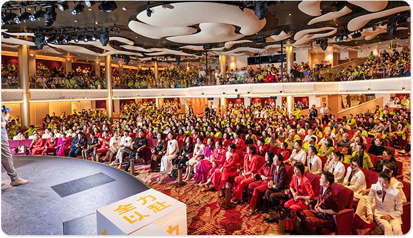
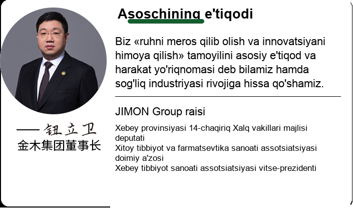

![JIMON rasmiy sayti]()


JIMON 1993-yilda tashkil etilgan va shtab-kvartirasi Xebey provinsiyasining Anguo shahrida, Xitoyning "Ming yillik tibbiyot poytaxti"da joylashgan. U an'anaviy xitoy tibbiyoti sohasida 33 yillik tajribaga ega va 2000 ga yaqin xodimga ega.
JIMON ikkita asosiy foydali sektorni qurdi: an'anaviy xitoy tibbiyot sanoati va umumiy sog'liqni saqlash sanoati. Farmatsevtika sohasida guruh to'rt asrlik brendlarni, jumladan, Baoding an'anaviy xitoy tibbiyoti, Anyao guruhi, Yuhontang xolding guruhi va Yishoutangni birlashtirib, dorivor ekish, intensiv qayta ishlash, ishlab chiqarish va terminal sotishni birlashtiruvchi to'liq sanoat zanjirini tashkil etdi. U 300 ta dori vositalarini tasdiqlash raqami, 56 ta milliy patent, 11 ta eksklyuziv mahsulotga ega va yuqori standartli zamonaviy ishlab chiqarish liniyalari bilan jihozlangan. Uning mahsulotlari nafaqat milliy bozorda yaxshi sotilmoqda, balki Singapur, Kanada va boshqa mamlakatlar va mintaqalarga eksport qilinib, an'anaviy xitoy tibbiyoti va umumiy salomatlikning xalqaro tartibini barqaror targ'ib qilmoqda.

TMWS sanoat xizmati tushunchasi
sIndustrial Service Philosophy
JIMON guruhining keng qamrovli sog'liqni saqlash sanoati zamonaviy aholi uchun yuqori sifatli hayot echimlarini ta'minlash uchun T (an'anaviy TRADITION) + M (zamonaviy MODERN) + W (donolik WISDOM) + S (ilmiy FAN) sanoat xizmati kontseptsiyasiga asoslangan an'anaviy xitoy tibbiyot ilm-fan va texnologiyasining innovatsion fikrlashiga asoslangan. "Yangilik" sari intiluvchi va "sifat" ga intiluvchi JIMONning keng qamrovli sog'liqni saqlash tizimi ko'plab sohalarda birlashadi va rivojlanadi.
An'anaviy Xitoy tibbiyotining aqlli kimyoviy zavodi sanoatda yangi hayotiylikni faollashtiradi. Guruh ketma-ket JIMONshan quvvatli funktsional oziq-ovqat mahsulotlari uchun ilmiy-tadqiqot va ishlab chiqarish bazasini, JIMONjinshan Ant parhez mahsulotlari uchun ilmiy-tadqiqot va ishlab chiqarish bazasini va JIMON Snow Orchid kosmetikasi uchun ilmiy-tadqiqot va ishlab chiqarish bazasini qurib, professional va keng ko'lamli sanoat tartibini tashkil etdi.
Sanoat innovatsiyalari sohasida JIMON Health o'zining sanoat afzalliklarini mustahkamlashda davom etish uchun "JIMON Selection" xususiy elektron tijorat innovatsion ekologik platformasini va JIMON Sog'liqni saqlashni boshqarish markazini yaratdi. Guruh an'anaviy xitoy tibbiyoti va zamonaviy texnologiyalarni chuqur integratsiyalashuviga yordam beradi, platformaning yuqori sifatli rivojlanishini kuchaytirish uchun raqamli razvedkadan foydalanadi, brend tushunchalarini foydalanuvchilarning sog'lig'iga bo'lgan ehtiyoji bilan yaqindan integratsiya qiladi, an'anaviy xitoy tibbiyotining sog'liqni saqlash aloqa usullarini doimiy ravishda yangilaydi, har bir foydalanuvchiga aniq sog'liqni saqlash xizmatlarini taqdim etadi va hamma bilan birgalikda harakat qiladi va o'z orzulariga erishadi.
An'ana
An'anaviy xitoy tibbiyotining ming yillik donoligini doimiy ravishda meros qilib oling va uning kelib chiqishiga sodiq qoling
Oltin va yog'och Anguoda ildiz otib, an'anaviy xitoy tibbiyoti merosini meros qilib oladi. Qadimgi usullardan foydalangan holda tayyorlangan qat'iy tanlangan haqiqiy dorivor materiallar va yangilangan klassik retseptlar.

Zamonaviy Zamonaviy
Zamonaviy texnologiyalarni qabul qiling va innovatsion sanoat modellarini yarating
Xalqaro sanoat parkini qurish va ilg‘or texnologik innovatsiyalarga e’tibor qaratish; o'n minglab gektar maydonlarda GAP ekish bazasini qurish, to'liq zanjirli kuzatuv boshqaruvini amalga oshirish; va omni-kanal xizmat kafolatlarini yaxshilash.

Donolik
Ehtiyotkorlik bilan sog'liqni saqlash tizimini yaratish uchun texnologiya va gumanitar fanlarni integratsiyalash
Sog'liqni saqlash platformasini ishlab chiqing va yarating, AI aqlli kiyimini targ'ib qiling, aqlli xitoy tibbiyoti miyasini yarating va yurakni isituvchi eksklyuziv himoya bilan ta'minlang.

Ilmiy fan
Ilmiy ruh bilan tadqiqot va ishlanmalarni chuqurlashtirish va sifat va innovatsiyalarga rioya qilish
Professional ilmiy tadqiqot platformasini yarating, ilmiy tadqiqot sharoitlarini yaxshilashga sarmoya kiritishda davom eting, yakuniy sifat nazorati bilan kuzatib boring va har yili bir qator innovatsion yangi mahsulotlarni ishga tushiring.

Ilmiy tadqiqotga asoslangan, eksperimental dalillar
scientific research
JIMON Shanxay Super Laboratory SUPER LAB ilmiy tadqiqot guruhi bilan chuqur strategik hamkorlikka erishdi. Ikkala tomon ham biosintez texnologiyasi va yashil organik xom ashyoni ilmiy-tadqiqot va innovatsiyalarga qaratadi. Yuqori texnologiyali korxona sifatida biz iste'molchilarga to'liq zanjirli, integratsiyalashgan kompleks xizmat ko'rsatish echimlarini taqdim etish uchun ilmiy tadqiqotlar va birgalikda yaratish, formulalarni tadqiq qilish va ishlab chiqish, mahsulotni ishlab chiqish va moslashuvchan ta'minot zanjiri boshqaruvi kabi asosiy imkoniyatlarni birlashtiramiz.

Group 300 dan ortiq dori9ni tasdiqlovchi hujjatlar mavjud dan ortiq kishidan iborat professional Ar-ge guruhi

100+ patent va 60 dan ortiq kishidan iborat jamoa 16 000+ formulalar barcha toifalarga kuch beradi
Xalqimiz salomatligining kelajagi qayta shakllantirilmoqda va biz bu borada yetakchilik qilmoqdamiz. JIMON ko'plab taniqli sog'liqni saqlash brendlarini birlashtiradi va uning biznes tarmog'i dunyoning ko'plab mamlakatlari va mintaqalarini qamrab oladi va 100 000 dan ortiq a'zolarga xizmat qiladi. Biz ishonchli ilmiy tadqiqot imkoniyatlari bilan inson salomatligiga oid chuqur tushunchalarni birlashtirish uchun birgalikda ishlaymiz va professional kuch bilan global sog'liqni saqlash uchun ijobiy qiymat yaratishda davom etamiz.


14-Xebey provinsiyasi xalq kongressi vakili
Butun Xitoy sanoat va savdo federatsiyasi farmatsevtika sanoati Savdo palatasi ijrochi raisi
Xebey farmatsevtika sanoati assotsiatsiyasining aylanuvchi prezidenti
Butunjahon xitoy tibbiyot jamiyatlari federatsiyasining sanoat va taʼlim integratsiyasini rivojlantirish boʻyicha ishchi qoʻmitasi raisi oʻrinbosari
JIMON xayriya fondi raisi
Keng qamrovli sog'liqni saqlash sanoati sohasini kengaytiring, marketing bo'yicha hamkorlarimizga "oltin sifat, umumiy almashish" biznes falsafasini qo'llab-quvvatlang, an'anaviy xitoy tibbiyoti va keng qamrovli salomatlikni dunyoga targ'ib qiling, sharqona o'simlik tibbiyotining tabiiy kuchini dunyoga keltiring va keng qamrovli sog'liqni saqlash sanoatini dunyoga olib boradigan etakchi korxona yaratishga intiling.

JIMON texnologiyasi, tozalangan sifat, JIMON guruhining global salomatlik va aqlli ekologik strategiyasi
Global sog'liqni saqlash aqlli ekologiyasi va C-tomoni fikrlashning integratsiyasi va innovatsiyasidan "ichak-X o'qi" sog'liqni saqlashni boshqarish tizimiga, global "olti o'lchovli tanlov" ta'minot zanjirini tashkil etishga; nufuzli ilmiy tadqiqot kuchlarini bog'lashdan sanoat, akademik, tadqiqot va marketingni integratsiyalashgan boshqaruv va nazoratni amalga oshirishgacha JIMON an'anaviy Xitoy tibbiyot sanoatini ikki g'ildirakli tadqiqot va ta'minot zanjiri bilan yangilash yo'lida barqaror va aniq iz qoldirib bormoqda. Ushbu harakat nafaqat foydalanuvchilarning ko'pchiligining sog'lig'ini yanada aniqroq va xavfsizroq himoya qiladi, balki sheriklar uchun yanada barqaror va uzoq muddatli rivojlanish maydonini yaratadi, har bir foydalanuvchi va har bir sherik bilan qiymat simbiozini va g'alaba qozongan hamkorlikni amalga oshiradi.
JIMONning global salomatlik va aqlli ekologik strategiyasi butun aholini, butun hayot aylanishini va butun sanoat zanjirini qamrab oluvchi sog'lom va aqlli ekotizimni yaratish uchun guruhning ilmiy-tadqiqot, ishlab chiqarish, sotish, xizmat ko'rsatish va boshqa sohalardagi resurslari va afzalliklarini birlashtiradi. JIMON brendini yangilash va o'zgartirish orqali biz nafaqat an'anaviy xitoy tibbiyot kompaniyasining o'sishi va kengayishini, balki an'anaviy xitoy tibbiyoti madaniyatining merosi va qayta tug'ilishini ham ko'ramiz. Hayotga hurmat, sifatda qat'iylik va innovatsiyalarga intilish bilan JIMON milliy sog'liqni saqlash, yorug'likka intilish va an'anaviy xitoy tibbiyotini modernizatsiya qilish va milliy salomatlikni himoya qilish uchun "oltin sifat" kuchiga hissa qo'shish uchun amaliy harakatlardan foydalanishda davom etmoqda.
Oltin va yog'ochdan kelib chiqqan, dunyoga tegishli
FROM JIMON TO THE WORLD
An'anaviy xitoy tibbiyoti va keng qamrovli sog'liqni saqlash texnologiyasi innovatsiyasi xalqaro miqyosda amalga oshirildi. So'nggi yillarda guruh global miqyosda faol ravishda tarqaldi va brendni ilgari surish va chuqur loyiha hamkorligini amalga oshirish uchun Frantsiya, Slovakiya, Germaniya, Janubiy Koreya, Singapur, Indoneziya va boshqa mamlakatlarga kirdi.

Qattiq o'sish va yangi cho'qqilarni zabt etish
Grow Strong Reach Far
Oltin yog'och sharafi
JIMON Honors

2025
Xebey provinsiyasi hukumati sifat mukofoti
2025
Qishloq xo'jaligini sanoatlashtirishning asosiy yetakchi korxonalari

2024 yil
Yuqori texnologiyali korxona

2018
Hebei Enterprise Technology Center

2017 yil
Xitoyning eng yaxshi o'nta nufuzli brendlari mukofotlari

2016 yil
Xebey provintsiyasida innovatsiyalarga asoslangan rivojlanishni namoyish qiluvchi korxona

2014 yil
Xitoy an'anaviy xitoy tabobati uyushmasining boshqaruv bo'limi

2009 yil
Viloyat mashhur savdo belgisi korxonasi sharafi

JIMON 1993-yilda tashkil etilgan va shtab-kvartirasi Xebey provinsiyasining Anguo shahrida, Xitoyning "Ming yillik tibbiyot poytaxti"da joylashgan. U an'anaviy xitoy tibbiyoti sohasida 33 yillik tajribaga ega va 2000 ga yaqin xodimga ega.
JIMON ikkita asosiy foydali sektorni qurdi: an'anaviy xitoy tibbiyot sanoati va umumiy sog'liqni saqlash sanoati. Farmatsevtika sohasida guruh to'rt asrlik brendlarni, jumladan, Baoding an'anaviy xitoy tibbiyoti, Anyao guruhi, Yuhontang xolding guruhi va Yishoutangni birlashtirib, dorivor ekish, intensiv qayta ishlash, ishlab chiqarish va terminal sotishni birlashtiruvchi to'liq sanoat zanjirini tashkil etdi. U 300 ta dori vositalarini tasdiqlash raqami, 56 ta milliy patent, 11 ta eksklyuziv mahsulotga ega va yuqori standartli zamonaviy ishlab chiqarish liniyalari bilan jihozlangan. Uning mahsulotlari nafaqat milliy bozorda yaxshi sotilmoqda, balki Singapur, Kanada va boshqa mamlakatlar va mintaqalarga eksport qilinib, an'anaviy xitoy tibbiyoti va umumiy salomatlikning xalqaro tartibini barqaror targ'ib qilmoqda.
TMWS sanoat xizmati tushunchasi
Industrial Service Philosophy
JIMON guruhining yirik sog'liqni saqlash sanoati an'anaviy xitoy tibbiyoti ilm-fan va texnologiyasining innovatsion fikrlashiga asoslanadi.
Sanoat xizmati kontseptsiyasi zamonaviy odamlar uchun yuqori sifatli hayot echimlarini taqdim etadi. "Yangilik" sari intiluvchi va "sifat" ga intiluvchi JIMONning keng qamrovli sog'liqni saqlash tizimi ko'plab sohalarda birlashadi va rivojlanadi.


An'ana
An'anaviy xitoy tibbiyotining ming yillik donoligini doimiy ravishda meros qilib oling va uning kelib chiqishiga sodiq qoling
Oltin va yog'och Anguoda ildiz otib, an'anaviy xitoy tibbiyoti merosini meros qilib oladi. Qadimgi usullardan foydalangan holda tayyorlangan qat'iy tanlangan haqiqiy dorivor materiallar va yangilangan klassik retseptlar.

ZAMONAVIY
Zamonaviy texnologiyalarni qabul qiling va innovatsion sanoat modellarini yarating
Xalqaro sanoat parkini qurish va ilg‘or texnologik innovatsiyalarga e’tibor qaratish; o'n minglab gektar maydonlarda GAP ekish bazasini qurish, to'liq zanjirli kuzatuv boshqaruvini amalga oshirish; va omni-kanal xizmat kafolatlarini yaxshilash.
Hikmat HIKMAT
Ehtiyotkorlik bilan sog'liqni saqlash tizimini yaratish uchun texnologiya va gumanitar fanlarni integratsiyalash
Sog'liqni saqlash platformasini ishlab chiqing va yarating, AI aqlli kiyimini targ'ib qiling, aqlli xitoy tibbiyoti miyasini yarating va yurakni isituvchi eksklyuziv himoya bilan ta'minlang.

FAN
Ilmiy ruh bilan tadqiqot va ishlanmalarni chuqurlashtirish va sifat va innovatsiyalarga rioya qilish
Professional ilmiy tadqiqot platformasini yarating, ilmiy tadqiqot sharoitlarini yaxshilashga sarmoya kiritishda davom eting, yakuniy sifat nazorati bilan kuzatib boring va har yili bir qator innovatsion yangi mahsulotlarni ishga tushiring.
Ilmiy tadqiqotga asoslangan, eksperimental dalillar
scientific research
JIMON Shanxay Super Laboratory SUPER LAB ilmiy tadqiqot guruhi bilan chuqur strategik hamkorlikka erishdi. Ikkala tomon ham biosintez texnologiyasi va yashil organik xom ashyoni ilmiy-tadqiqot va innovatsiyalarga qaratadi. Yuqori texnologiyali korxona sifatida biz iste'molchilarga to'liq zanjirli, integratsiyalashgan kompleks xizmat ko'rsatish echimlarini taqdim etish uchun ilmiy tadqiqotlar va birgalikda yaratish, formulalarni tadqiq qilish va ishlab chiqish, mahsulotni ishlab chiqish va moslashuvchan ta'minot zanjiri boshqaruvi kabi asosiy imkoniyatlarni birlashtiramiz.
Xalqimiz salomatligining kelajagi qayta shakllantirilmoqda va biz bu borada yetakchilik qilmoqdamiz. JIMON ko'plab taniqli sog'liqni saqlash brendlarini birlashtiradi va uning biznes tarmog'i dunyoning ko'plab mamlakatlari va mintaqalarini qamrab oladi va 100 000 dan ortiq a'zolarga xizmat qiladi.


Oltin va yog'och texnologiyasi, tozalangan sifat
JIMON Tech Precision Quality

Oltin va yog'ochdan kelib chiqqan, dunyoga tegishli
FROM JIMON TO THE WORLD

An'anaviy xitoy tibbiyoti va keng qamrovli sog'liqni saqlash texnologiyasi innovatsiyasi xalqaro miqyosda amalga oshirildi. So'nggi yillarda guruh global miqyosda faol ravishda tarqaldi va brendni ilgari surish va chuqur loyiha hamkorligini amalga oshirish uchun Frantsiya, Slovakiya, Germaniya, Janubiy Koreya, Singapur, Indoneziya va boshqa mamlakatlarga kirdi.
Qattiq o'sish va yangi cho'qqilarni zabt etish
Grow Strong Reach Far


Oltin yog'och sharafi
jimon Honors
2025
Xebey provinsiyasi hukumati sifat mukofoti
2025
Qishloq xo'jaligini sanoatlashtirishning asosiy yetakchi korxonalari
2024 yil
Yuqori texnologiyali korxona
2018
Hebei Enterprise Technology Center
2017 yil
Xitoyning eng yaxshi o'nta nufuzli brendlari mukofotlari
2016 yil
Xebey provintsiyasida innovatsiyalarga asoslangan rivojlanishni namoyish qiluvchi korxona
2014 yil
Xitoy an'anaviy xitoy tabobati uyushmasining boshqaruv bo'limi
2009 yil
Viloyat mashhur savdo belgisi korxonasi sharafi

2004 yil
Iste'molchilar mahsulot nomiga ishonishlari mumkin